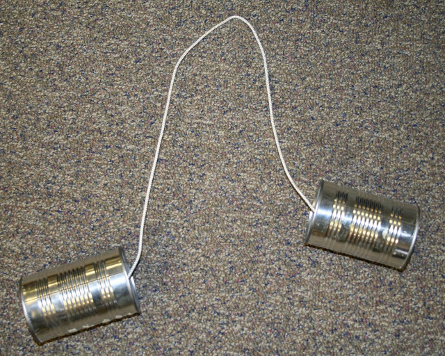

Go Without Wires
TinyGo Minicon 2021
Ron Evans - @deadprogram
Ron Evans (@deadprogram)
Technologist For Hire
hybridgroup.com
Technologists
For Hire
Clients
Open Source Projects
gobot.io

gocv.io
tinygo.org

Wireless Networking
Wireless Personal Area Network
(WPAN)

Go Bluetooth
Linux
macOS
Windows 10
(minimal support, needs work)
Bare Metal
Microcontrollers
Nordic Semiconductor "Softdevice"
What's so good about Bluetooth, anyhow?
Low power use
High speed
It is already everywhere
Which Bluetooth Is For you?
Bluetooth Low Energy
Bluetooth Smart
Bluetooth
How Bluetooth Works

BLE Stack (via Sparkfun)
Bluetooth - the roles
Peripherals
Centrals

(via Adafruit)
Generic Access Protocol (GAP)
When Peripherals Want To Be Found...
They Advertise
Adafruit ItsyBitsy-nRF52840
Nordic Semiconductor nrf52840
32-bit processor
64 Mhz Cortex-M4
1024K Flash
Code
Demo
When Centrals are looking for Peripherals...
They Scan
Code
Demo - Linux
Demo - Clue
And then...
They connect
There is no actual contact between Centrals and Peripherals.
Connections are exclusive
The big question...
What data do you have?
Generic Attribute Protocol (GATT)
Services
Service UUID
List of characteristics
Characteristics
Characteristic UUID
Actual Data

(via Adafruit)